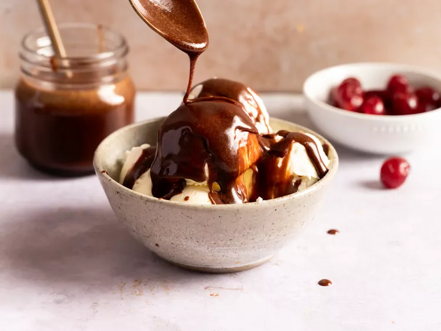

Home
Marshmallow Hot Fudge Sauce

marshmallow topped with hot fudge sauce
This rich and creamy hot fudge sauce is made with marshmallows and chocolate chips, perfect for topping your favorite desserts.
Ingredients
- 30 large marshmallows
- ⅔ cup milk
- ¼ cup butter
- ⅛ teaspoon salt
- 1 (12 ounce) package semisweet chocolate chips
- 1 ½ teaspoons vanilla extract
Steps
- Gather all ingredients.
- Heat marshmallows, milk, butter, and salt in a saucepan over low heat until marshmallows melt, stirring often, about 5 minutes.
- Add chocolate chips and vanilla extract; continue stirring until chocolate is melted, 5 minutes more. Serve warm.